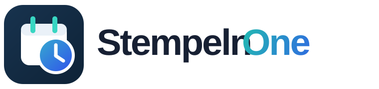

Meine Apps
Praktische Web-Apps für Arbeit, Lernen, Planung und Alltag.
Lesebuch
Lesen, Wortschatz und Deutschlernen in einer Anwendung.
Stempeln
Eine einfache App zum Erfassen von Kommen und Gehen.
Küchenplan
Wochenmenüs, Rezepte, Allergene und Einkaufslisten für die Kita-Küche.
Einkaufszettel
Eine gemeinsame Einkaufsliste für den Haushalt.

Digitale Arbeitszeiterfassung für Unternehmen und Teams.